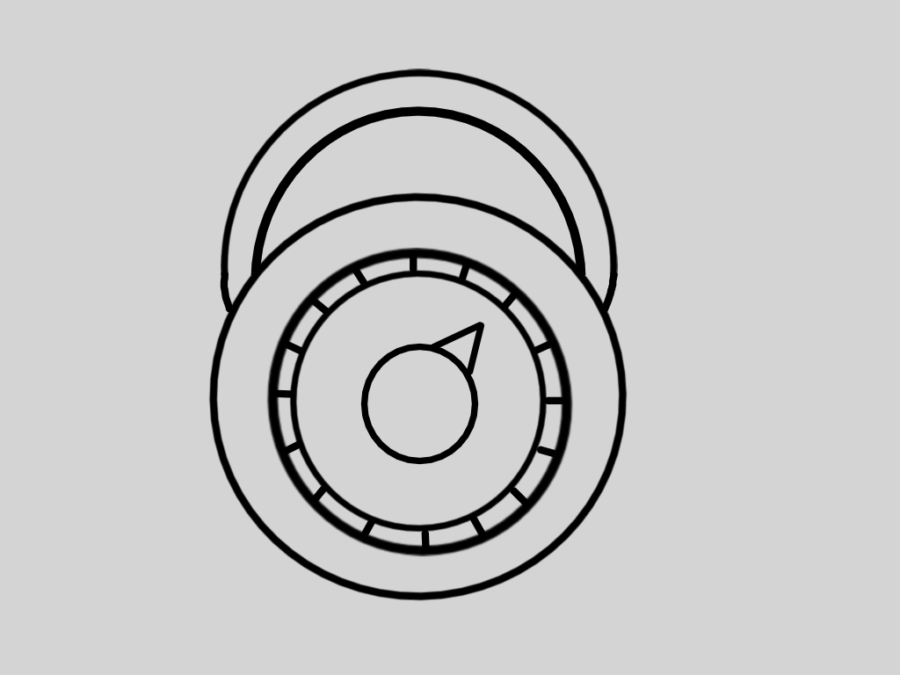
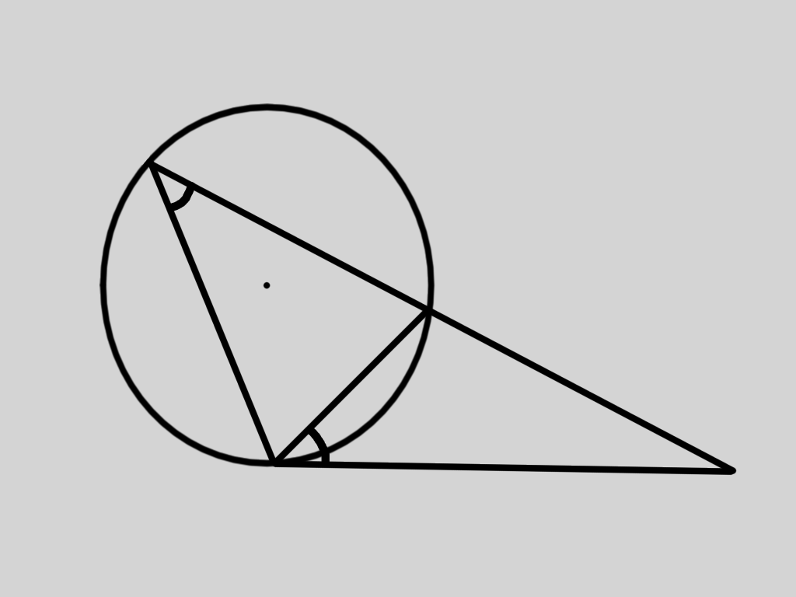
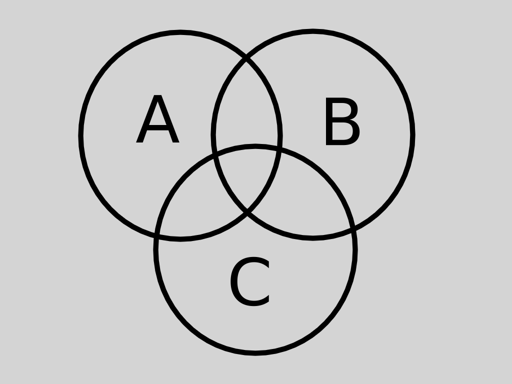

Hello, I am Aaron He and I am a programmer and an aspiring computer scientist. I enjoy math and computing science subjects, and I have
an interest in problem solving as well as implementing algorithms. This is my personal website, and here you will find some of my previous
projects, and blog posts, where I share my understanding of math and computing science. If you like what you see here, you can
check out the source to my projects on my
Github, and find some of my videos on
YouTube.
Mathematics
Mathematics is an extremely broad field, which generally includes computiation, logical thinking, and pattern recognition. Mathematics
has no single accepted definition. It plays a major role in world, as it allows us to create predictions about the future, and make judgements
based on logic and previous knowledge. When many people think about math, they think of numbers, heavy computiation, and the memorization of many
formulas, although it is much more than just that. Some of the overlooked mathematical fields include combinatorics, geometry, graph theory, set theory, and game theory.




What makes mathematics an interesting field are problems that are solved, and the problems that are not. Difficult problems that are solvable highlights
the extent of mathematical knowledge, and unsolved problems shows how there is still much to be discovered. The
International Mathematical Olympiad
and the
Putnam Competition are two examples of math competitions that have extremely difficult solved problems. These contests require years of preperation
several math topics in order to excel, and some problems represent the limit of high school and university math. However, some math problems are unsolved, and can offer large cash prizes for solutions.
The
Millenium Problems are unsolved problems, with a prize of one million dollars for a solution. In general,
math can show how much we know about the world, and how little we know as well.